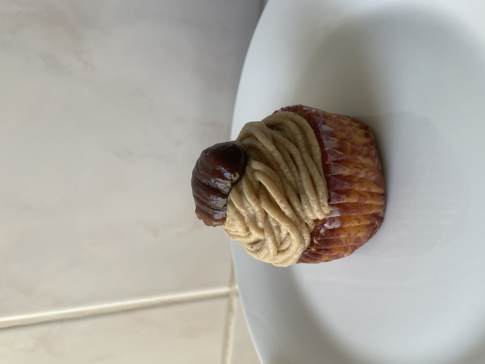
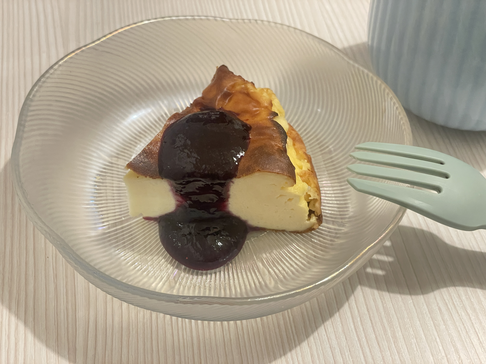

Work 1 - Matcha Cookies


Ingredients: matcha powder, white chocolate, butter, sugar, flour, and eggs.
- Sweet but a bit bitter because of the matcha powder. It tasted amazing!
Work 2 - Mont Blanc Cake (Mont-Blanc Aux Marrons)
Ingredients: chestnut, heavy cream, sugar, rum, butter, flour, and eggs.
- I baked this for a farewell party of my friends!
Work 3 - Cheesecake
Ingredients: cream cheese, heavy cream, sugar, flour, and eggs (+blueberry for the sauce).
- The combination of cheesecake and blueberry is the best for me!
- This cheesecake might also be called "Basque Cheesecake".